Легко ли собирать конфетные подарки?
Журналист «СБ. Недели», чтобы это узнать, отправилась на «Коммунарку» — говорит, то ещё кардио!
Наш корреспондент
Валерия Курневич
с детства слышала, что непослушные ребятишки на Новый год рискуют остаться без подарка от Деда
Мороза…
Ну и ладно, посчитала Лера, ведь есть те, кто списки хорошего поведения не ведёт и предлагает
красочные
коробки с конфетами всем! Например, одна лишь кондитерская фабрика «Коммунарка» выпустит полтора
миллиона
сладких наборов. Но собрать их, журналист посчитала более весёлой идеей, чем просто съесть. А вот
было ли
это легко? Читайте в нашем
«Живом репортаже».
ШАГ 1:
Осваиваем технологию
Именно здесь, на специальном участке фабрики в эти недели рождаются новогодние сюрпризы - словно мастерская Деда Мороза, только вместо известных сказочных помощников – сосредоточенные расфасовщицы. Всего на участке трудятся около 150 работников, на каждой из трех лент своя команда по 13 человек. Работают в три смены – даже ночью.
Прежде чем самой стать за конвейер, разбираюсь, что к чему. Первая мастерица напоминает дирижера: отбирает картонные заготовки, укладывает в них шоколадные плитки и задает скорость движения ленты. Думаю, для новичка задача уровня «хард», так что встану в шеренгу. Здесь каждый работник вносит свою сладкую лепту – кладет в «плывущую» по ленте коробку по две-три позиции. Параллельно нужно успевать пополнять свои запасы свежей продукцией. В конце подарок взвешивают и клеят два стикера: на одном перечислено полное описание состава, а другой сообщает, что все вкусности на основе натуральных какао-продуктов.
От обилия свертков глаза разбегаются, так и тянет попробовать хотя бы одну штучку. И вдруг выясняется: это не запрещено. Неужели сбылась детская мечта? Ага, как же - у новичка времени на дегустацию просто не хватает, а для старожилов искушение потеряло остроту.
Любопытно, что сначала смена формирует легкие комплекты по 300 граммов, потом нагрузка постепенно растет. Самый тяжелый вариант – баул аж на три кило. Ну а мое задание на сегодня – килограммовый подарок, в который входит 21 позиция. Буду класть многими любимую конфету «Ромашка» – она есть в каждом наборе. По транспортеру одна за другой едут открытые упаковки. С глянцевых обложек за процессом внимательно наблюдает символ наступающего года – лошадь. Раз - и сладость опускается в коробку. Еще одна, третья, четвертая… Радуюсь, что у меня все отлично получается. Спойлер: рано радуюсь.
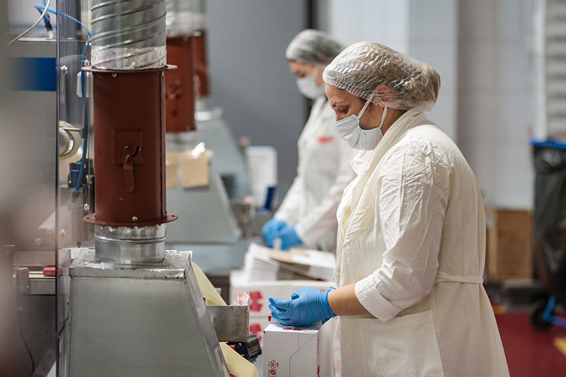
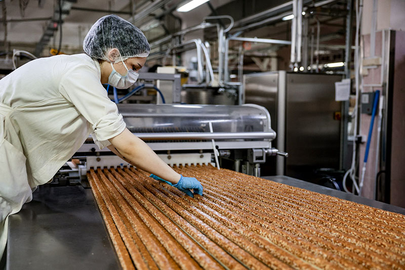
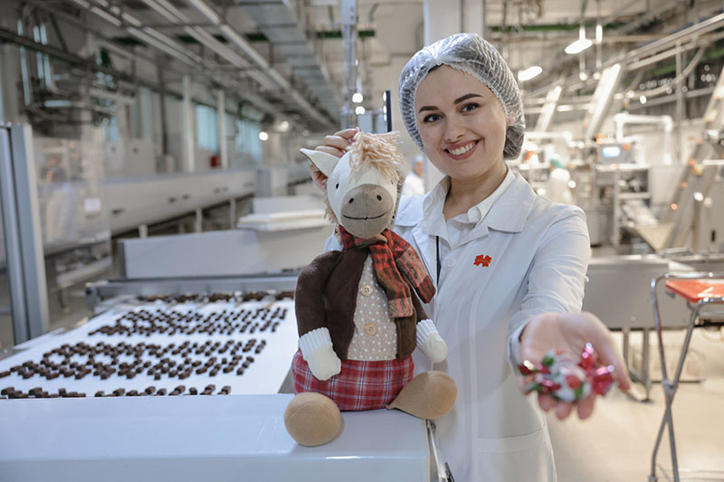
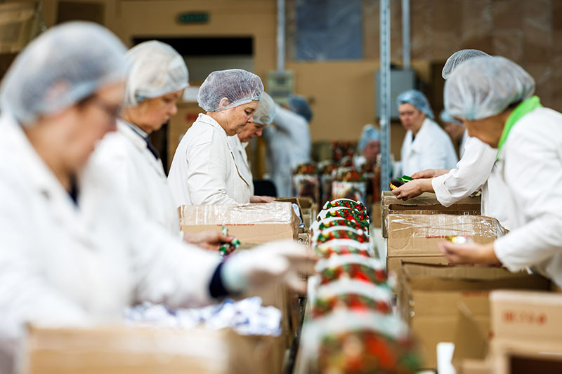
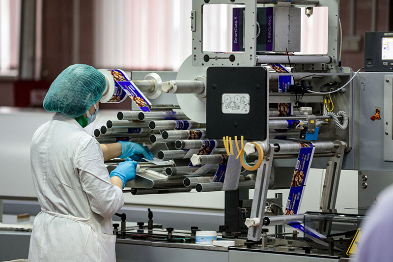
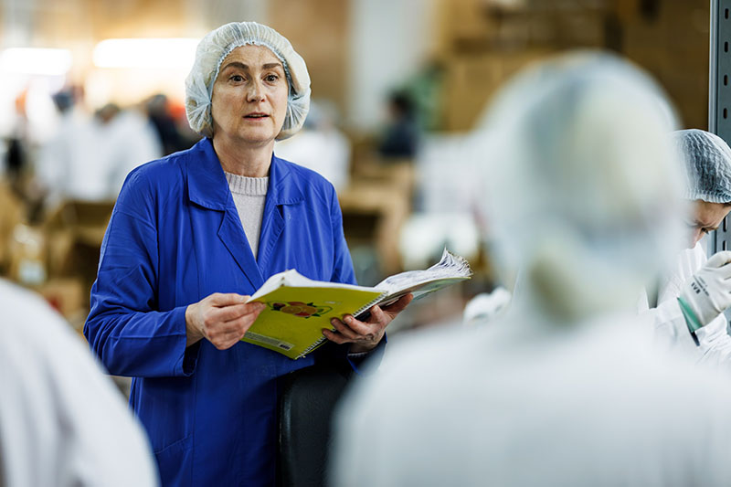
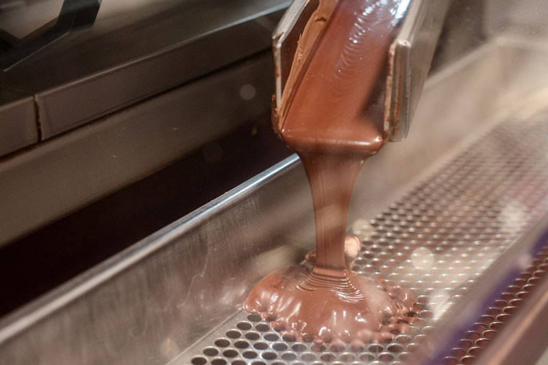
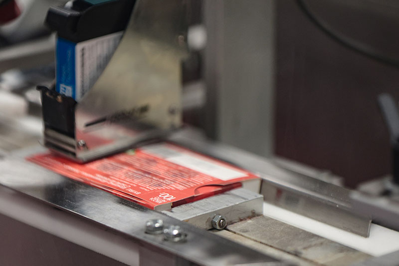
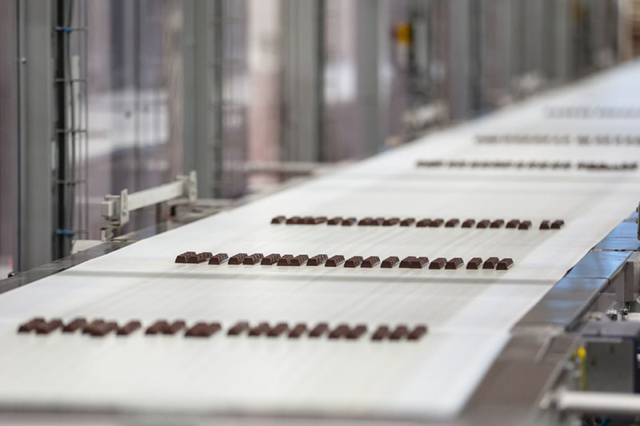
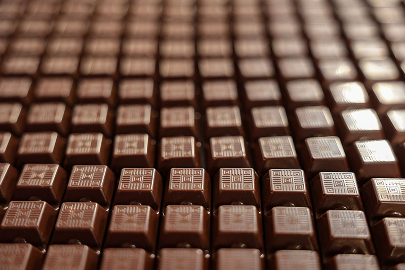
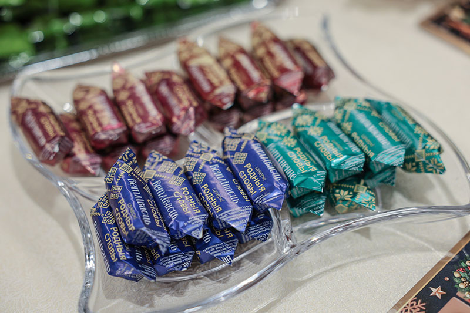
ШАГ 2:
Боремся со «снегирями»
Первые минут десять шли как по маслу – голова ясная, настрой боевой. Но очень скоро от блеска фольги начинает рябить в глазах. Девчата шутят, что ближе к середине смены «Снегири» запоют. Стою над презентом, пытаясь вспомнить: положила угощение или только собиралась? Пока тянусь за новой порцией, баул уезжает вперед – приходится догонять. За ним - следующая партия, даже секунды нет на передышку. Обиднее всего, что остальные без суеты продолжают свое дело!
Что тут говорить – опыт. Многие фасуют конфеты годами, как моя соседка по ленте бригадир
Елена Малько. В этом сезоне Елене доверили взвешивание – самую ответственную операцию. Одну
из коробок она отставляет в сторону: не хватает нескольких граммов. Я понуро смотрю на
товарищей по цеху – кажется, знаю, чья ошибка. Но никто и не думает ругаться.
– Поначалу промахи у всех были, привыкнешь, - подбадривает напарница Людмила Свинтилова. –
Повезло, что набор легкий, у каждой всего пара конфет. А в больших баулах состав куда
разнообразнее.
Спина ноет, ноги будто деревянные. И что я вижу! Лента понемногу прибавляет ход. До конца смены осталось 15 минут – нужно закрыть норму. Все еще пытаюсь подстроиться под ритм, но фабричная волна так и не поддается. Последний кулек уходит по транспортеру – наконец, выдыхаю.
Признаюсь, час на конвейере ощущается как полноценное кардио. Кстати, эта работа развивает моторику лучше любого оригами. Но расслабляться рано, сначала нужно привести в порядок рабочее место: собрать пустые лотки, протереть столы, выровнять стопки упаковки, чтобы следующей бригаде было удобно начинать. На соседней линии уже перенимают эстафету: раскладывают фигурки Дедов Морозов. Говорят, с ними хлопот больше. «Куда уж больше?!» – вопрошаю про себя.
ШАГ 3:
Наслаждаемся набором
На этом моя работа окончена. Ухожу из цеха с волнительной мыслью: среди полутора миллионов новогодних коробочек будет несколько тех, куда я собственноручно положила угощение вместе с пожеланием счастливого Нового года. За день в цеху успевают собрать 14–16 тысяч наборов, но если попадаются сложные с большим весом, то около пяти тысяч. Обычно работу завершают до 25 декабря, однако спрос, как правило, корректирует планы – приходится делать новые партии. Выбор впечатляет: лаконичные картонные коробки, шкатулки с замочками, чемоданчики, бархатные мешочки, мягкие фигурки...
Кстати, к празднику на фабрике готовятся задолго до зимы. В этом сезоне подарки начали собирать аж 15 сентября. В зимней подборке более 40 наименований: от классики до сезонных новинок. Кстати, в комплекты добавляют изделия других предприятий, которые сами не производят, – мармелад, зефир, карамель. Но вот что вы точно не встретите, так это конфеты с алкогольной начинкой.
– Чтобы определить, какие позиции и в каком количестве попадут внутрь, мы анализируем результаты прошлого года: что пользовалось спросом, а что, наоборот, не зашло покупателям, – объясняет начальник производственного отдела Эмма Глецевич. - Также ежедневно проводим детские экскурсии, интересуемся у ребят, какой дизайн им нравится.